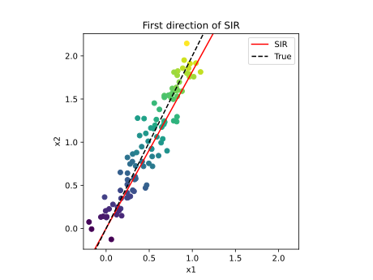
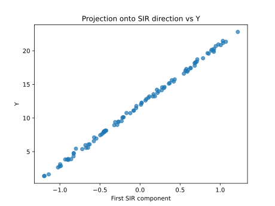
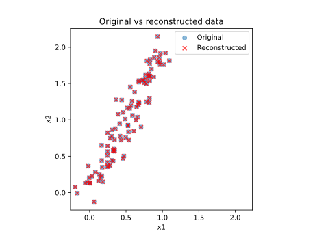

Note
Go to the end to download the full example code.
Sliced inverse regression on 2-d data¶
In this example we use the
SlicedInverseRegression class to find the
effective dimension reduction (EDR) space of a 2-d input.
Introduction¶
We consider the following linear model:
![Y = 4 (X_1 + 2 X_2) + 2 + \varepsilon]()
where ![X = (X_1, X_2)]() is a 2-d random vector and
is a 2-d random vector and
![\varepsilon \sim \cN(0, 0.2^2)]() is the noise.
is the noise.
The response ![Y]() depends on
depends on ![X]() only through the single
direction
only through the single
direction ![\beta = (1, 2)^T]() . This is the effective dimension
reduction (EDR) direction.
. This is the effective dimension
reduction (EDR) direction.
The SIR algorithm attempts to recover this direction from the data.
import openturns as ot
import openturns.experimental as otexp
import matplotlib.pyplot as plt
import numpy as np
Create the data¶
We generate ![n = 100]() observations of the input. The input is
a mixture of a random normal component and a deterministic drift
along the direction
observations of the input. The input is
a mixture of a random normal component and a deterministic drift
along the direction ![(1, 2)]() :
:
ot.RandomGenerator.SetSeed(0)
N = 100
X = ot.Normal([0.0] * 2, [0.1] * 2).getSample(N)
X += [[i / (N - 1), 2 * i / (N - 1)] for i in range(N)]
# X is centered internally by the SIR algorithm
f = ot.SymbolicFunction(["x1", "x2"], ["4*(x1+2*x2)+2"])
Y = f(X) + ot.Normal(0.0, 0.2).getSample(N)
Plot the data¶
The color of each point represents the output value .
The data varies predominantly along the direction,
which is also the direction that drives :
plt.scatter(X.getMarginal(0), X.getMarginal(1), c=Y)
plt.xlabel('x1')
plt.ylabel('x2')
plt.axis('square')
plt.title("2D colored dataset")
plt.colorbar(label='Y')
plt.show()

Run the SIR algorithm¶
Run the algorithm and retrieve the estimated EDR directions:
Show SIR direction¶
The estimated direction (red line) should align with the true
EDR direction (black dashed line).
The directions are stored in the columns of the matrix returned by
getDirections():
plt.scatter(X.getMarginal(0), X.getMarginal(1), c=Y)
plt.xlabel('x1')
plt.ylabel('x2')
plt.axis('square')
plt.title("First direction of SIR")
dir_sir = result.getDirections()
plt.plot([-dir_sir[0, 0] * 30, dir_sir[0, 0] * 30],
[-dir_sir[1, 0] * 30, dir_sir[1, 0] * 30], c='red', label='SIR')
beta = ot.Point([1.0, 2.0]) / np.sqrt(5)
plt.plot([-beta[0] * 30, beta[0] * 30],
[-beta[1] * 30, beta[1] * 30], 'k--', label='True')
plt.legend()
plt.show()

Eigenvalues¶
The eigenvalues indicate the strength of each direction. A large gap between the first and second eigenvalue suggests that a single direction is sufficient to capture the dependence on Y:
eigenvalues = result.getEigenvalues()
print("Eigenvalues:", eigenvalues)
Eigenvalues: [0.984877,0.121407]
Projection onto the EDR direction¶
We apply the estimated transformation to project the data onto
the EDR direction and plot it against .
A clear linear relationship confirms that SIR has correctly
identified the direction:
X_sir = transformation(X)
plt.scatter(X_sir.getMarginal(0), Y, alpha=0.7)
plt.xlabel('First SIR component')
plt.ylabel('Y')
plt.title('Projection onto SIR direction vs Y')
plt.show()

Inverse transformation¶
We can also map back from the reduced 1-d space to the original 2-d space using the inverse transformation. The reconstructed points (red crosses) are close to the original data (blue dots), confirming that the reduction captures the important structure:
inverseTransformation = result.getInverseTransformation()
X_reconstructed = inverseTransformation(X_sir)
plt.scatter(X.getMarginal(0), X.getMarginal(1), alpha=0.5, label='Original')
plt.scatter(X_reconstructed.getMarginal(0), X_reconstructed.getMarginal(1),
marker='x', c='red', alpha=0.7, label='Reconstructed')
plt.xlabel('x1')
plt.ylabel('x2')
plt.axis('square')
plt.title('Original vs reconstructed data')
plt.legend()
plt.show()
